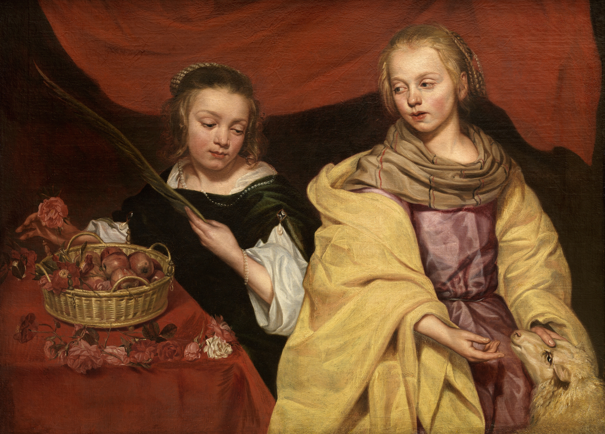
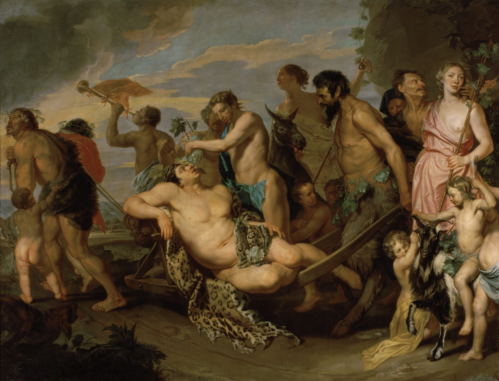

Профессор Катлейне ван дер Стихелен рассказывает о своей уникальной героине и первой ретроспективе прежде неизвестной художницы XVII века в музее MAS в Антверпене
Одним из главных событий года барокко в Антверпене стала выставка «Михаэлина» — первая ретроспектива фламандской художницы Михаэлины Вотье (1617–1689). В XVII столетии она не боялась перечить канонам европейского барокко, за что влиятельные коллекционеры ценили ее не меньше, чем художников-мужчин того времени. Но история искусства не сохранила ни ее имени, ни картин. Профессор, эксперт по фламандской школе живописи XVI–XVII веков и куратор Дома Рубенса Катлейне ван дер Стигелен восстанавливает жизнь и творчество Михаэлины Вотье по крупицам. Результаты ее многолетней работы будут представлены на выставке «Михаэлина» в музее MAS с 2 июня по 2 сентября 2018 года.
Как вы открыли для себя Михаэлину Вотье?
Художников-женщин XVII века можно пересчитать по пальцам. И казалось, что все они давно и хорошо известны. Это Луиза Муайон, Артемизия Джентилески, Клара Петерс, Мария ван Остервейк, Юдит Лейстер. С творчеством Михаэлины Вотье я познакомилась совершенно случайно. Моя специализация — фламандская школа XVI–XVII веков, и в начале 1990-х я поехала в Вену в Музей истории искусств посмотреть на одну картину Антониса ван Дейка. Но ее не было в постоянной экспозиции, и я попросила провести меня в запасники. И первое, что я там увидела, было монументальное полотно «Триумф Вакха». Оно меня поразило: и масштабом, и техникой. Спрашиваю: кто автор? Оказалось, что женщина, о которой практически ничего не известно, зовут Михаэлина Вотье. И я начала искать: в архивах, в библиотеках. Оказалось, что она гораздо интереснее, чем я могла себе представить. Несколько раз я предлагала сделать ее выставку разным музеям, но директора отказывались, и их можно понять: неизвестная художница — это риск. Но я уверена, что она того стоит. И счастлива, что в MAS готовы на этот риск пойти.
Что сближает ее с художницами XVII века? И в чем ее непохожесть?
Сложно сравнивать, но если говорить о Вотье и Артемизии Джентилески, то чисто технически их уровень живописи сопоставим. Однако тематический охват у Вотье гораздо шире. Джентилески хорошо владела кистью — прекрасно писала портреты и, например, библейские сцены. Вотье же в добавок к портретам и историческим сюжетам была сильна в жанровой живописи и натюрморте. Поражают размеры ее картин, нехарактерные для художниц того времени. Не укладывается в голове, как женщина XVII века могла писать обнаженных мужчин в мифологических сценах столь натуралистично. Почти нет сомнений, что у нее были живые модели перед глазами. Даже в XIX веке в академиях Парижа, Лондона, Брюсселя не утихали споры, позволить ли студенткам рисовать мужское тело. А тут XVII век! У Джентилески тоже можно встретить мужские тела, но не в таком разнообразии. У Вотье каких только нет: чернокожие, молодые, старики! Думаю, во многом это было возможно благодаря ее брату Шарлю Вотье.
Кем был ее брат? Что вам вообще известно о ее жизни и творчестве?
Немногое. Нам известны ее картины за период с 1643 по 1659 год. Это около 30 работ, и только половина из них подписаны и имеют дату, что затрудняет атрибуцию. Я искала информацию в архивах города Монс, где она родилась, и в Брюсселе, но тщетно. Точно знаю, что она была в хороших отношениях с Леопольдом-Вильгельмом Австрийским, эрцгерцогом в Брюсселе и одним из крупнейших коллекционеров XVII века. В Вену он вернулся со своим собранием и подробно его описал. И вот в этих архивах и появляется имя Михаэлины Вотье. Это едва ли не главная зацепка, которая помогает восстановить ее жизнь и творчество. Сейчас произведения из его коллекции принадлежат венскому Музею истории искусств, и они будут на выставке.
Известно, что Михаэлина происходила из состоятельной семьи, наполовину аристократов. Не думаю, что они поощряли ее увлечение живописью. Она никогда не была замужем, как и ее брат Шарль не был женат. Он тоже был художником, и, скорее всего, сестра училась у него. Они жили вместе и, вероятно, работали в одной мастерской.
В арт-мире женская тема сегодня вновь актуальна. Выставки художников-женщин — один из главных музейных трендов. Можно ли говорить о творчестве Вотье как о феминистском искусстве?
Ее, скорее, можно называть протофеминисткой. XVII век — продуктивное время для женщин художниц и писательниц. Во Франции, Англии, Нидерландах много говорили о возможностях женщин в обществе. Сегодня же дискуссии о феминизме — это хождение по лезвию ножа. Последние десять лет заявлять о своих феминистских взглядах считалось едва ли не дурным тоном. Но, по моим ощущениям, года четыре назад вновь подул феминистский ветер, появилось понимание, что борьба еще не выиграна, и эти веяния касаются не только сегодняшних художниц, но и их коллег-женщин из прошлого. В 2016 году я отстояла час в очереди, чтобы попасть на выставку Элизабет Виже-Лебрен в Большом дворце в Париже. Когда экспозиция переехала в Нью-Йорк, в одной из газет написали: «Поверить невозможно, что широкой публике открыли эту великую художницу только сейчас!» Я надеюсь, что с Вотье будет тот же эффект. Мне хочется вернуть ей место в истории искусства XVII века, которого она незаслуженно лишилась.
Автор: Мария Сидельникова15 АВГУСТА